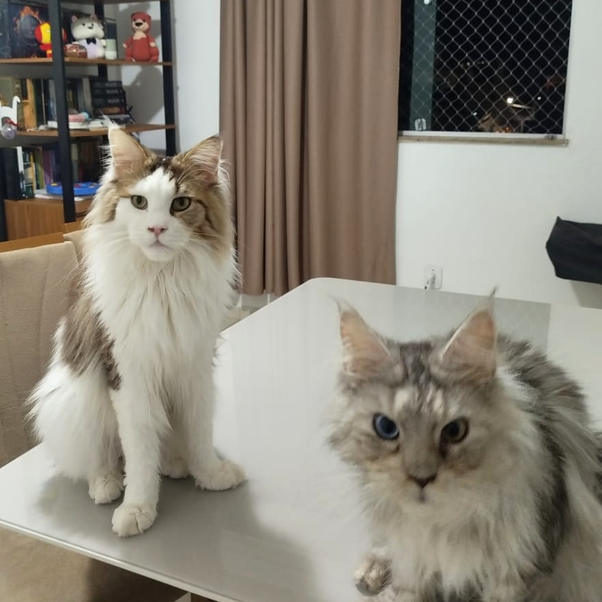

Dois maine coons brasileiros, nascidos em abril de 2025: o Merlin, de olhos bicolores e ladrão oficial de comida, e o Beni, escalador profissional e inimigo das fontes d'água.
Merlin & Beni Automação é uma ferramenta de uso pessoal do tutor dos gatos. Ela organiza as fotos e os vídeos deles, faz pequenas edições (luz, cor e recorte) e envia o conteúdo aprovado pelo tutor para as contas dos gatos nas redes sociais. Não é um serviço aberto ao público.
Instagram: @merlinebeni